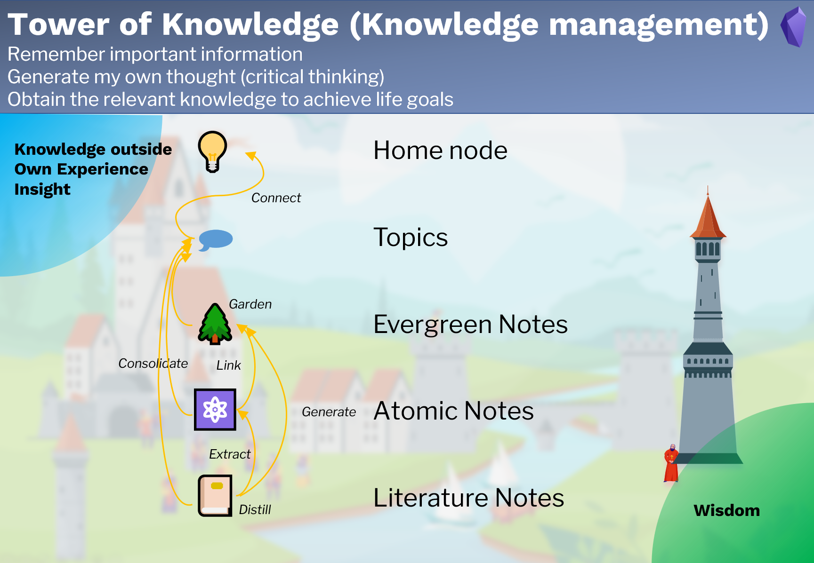
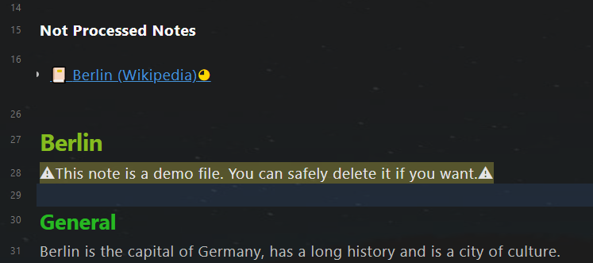
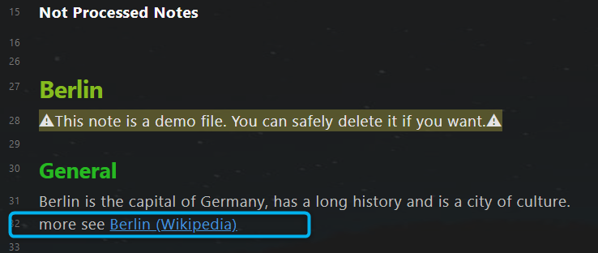

Knowledge Management
Purpose
The part Knowledge Management is designed to
- remember important information,
- generate my own thought (critical thinking),
- obtain the relevant knowledge to achieve life goals.
Note types
There are 4 note types for knowledge management:
- 📔Literature note: records of external information, e.g., books, articles, tweets, and videos. It is normally a mixture of information pieces like facts, opinions, stories, and so on.
- ⚛️Atomic note: a small piece of reusable external information, e.g., a story, an aphorism. They are extracted from the literature note and can be cited later in my articles.
- 🌲Evergreen note: note for my insight. its maturity level grows with my new knowledge and experience. It is a single information piece within one topic.
- 🗩Topic note: a collection of literature notes, atomic notes, and evergreen notes, which handle the same issue. The maturity level of the topics grows as the number of his child notes increases.
Workflow

The 4 note types are linked with each other:
- Literature notes are records of external information, they should be distilled to other note types.
- Atomic notes are extracted from literature notes and are linked to evergreen notes.
- Evergreen notes are generated from literature notes.
- Topic notes are consolidated results of the other three note types, also sub-topic notes. All top-level topic notes are connected to the home node.
Input: Knowledge from outside, own experience and insight
Output: Wisdom, that's true and works in the real world
Literature note
Yalm front matter
The literature note has the following standard property in the yalm front matter.
---
author: Wikipedia
excerpt: Berlin is the captical of Germany
fileClass: literature-note
score: xxxx
category-literature-note: article
reviewed: xx
cover: https://dummy.org/dummy.jpg
date: 2022-01-13
last-review: 2022-01-13
---
author: Author of the literature, optional
excerpt: Excerpt of the note, optional
fileClass: Note type, always literature-note
score: The note score, possible value: x,...,xxxxx, required for the feature Spaced repetition
category-literature-note: Category of the literature note, optional
reviewed: Review times, possible value: x,...,xxxxx, required for the feature Spaced repetition
cover: https of an image as a cover, optional, can be used to display the cover of the literature using dataview.
date: Creation date of the note, automatically created
last-review: Date of the last review, required for the feature Spaced repetition
"Context-aware resurfacing" section
After the yalm front matter, there is a section for "Context-aware resurfacing".
Tags:: #berlin
~~~dataviewjs
let tags = this.current().file.etags
let notes = tags
.map(t => dv.pages(t + ' and !"' + this.current().file.path + '"'));
dv.list(notes.file.link);
~~~
Tags:: for defining the context with tag.
You can also use tags in other note lines. This line is only a suggestion to keep notes having a similar structure.
Dataview code block, for resurfacing related notes.
All notes with the same tags as the current note will be displayed here, except the note itself.
Note title
The note title and the note file name are kept in sync with the plugin Filename heading sync.
Body text
The body text of the literature note.
Example:
~~~ad-summary
Berlin is the capital of Germany, has a long history and is a city of culture.
~~~
**Berlin is the capital and largest city of Germany by both area and population**. Its 3.7 million inhabitants make it the European Union's most populous city, according to population within city limits. One of Germany's sixteen constituent states, Berlin is surrounded by the State of Brandenburg and contiguous with Potsdam, Brandenburg's capital. Berlin's urban area, which has a population of around 4.5 million, ==**is the second most populous urban area in Germany after the Ruhr.**== The Berlin-Brandenburg capital region has around 6.2 million inhabitants and is Germany's third-largest metropolitan region after the Rhine-Ruhr and Rhine-Main regions. There was an unsuccessful attempt to unify both states in 1996, and despite remaining separate, the two states cooperate on many matters to this day.
💡 [[Ich bin ein Berliner - Kennedy]]
💡 [[German cities are beautiful]]
The text is displayed in the reading mode like the picture below.

Progressive summarization
It's suggested to use progressive summarization by Tiago Forte to read the literature note. It's a technology to consume the information step by step, and in the meanwhile compressing it by need. This technology contains the following steps.
- Note
- Bold passage using " "
- Highlight passage using "== =="
- Mini-summary using admonition "~~~ad-summary"
- Remix
In the sample text above there are two bold passages, one highlight passage, and a mini summary. For proper display of the mini-summary, the plugin Admonition is required.
Extraction of atomic notes and evergreen notes
You are expected to extract information from the literature note during the progressive summarization: atomic notes and evergreen notes. In the sample text, an atomic note and an evergreen note are extracted. (The last two lines.)
The symbol 💡 before the note title is used to mark the extracted note.
While reading the extracted note, you can easily find out, from which literature note it's extracted. The literature note has a symbol 💡 before the title in the linked mentions section. E.g. The atomic note "Ich bin ein Berliner - Kennedy" is extracted from "Berlin (Wikipedia)", but not from the topic note "Berlin".

Atomic note
Yalm front matter
The atomic note has the following standard property in the yalm front matter.
---
author: Kennedy
excerpt: a speech by United States President John F. Kennedy
fileClass: atomic-note
score: xx
category-atomic-note: aphorism
reviewed: x
date: 2022-07-14
last-review: 2022-07-14
---
author: Author of the literature, optional
excerpt: Excerpt of the note, optional
fileClass: Note type, always atomic-note
score: The score of the note, possible value: x,...,xxxxx, required for the feature Spaced repetition
category-atomic-note: Category of the atomic note, optional
reviewed: Review times, possible value: x,...,xxxxx, required for the feature Spaced repetition
date: Creation date of the note, automatically created
last-review: Date of the last review, required for the feature Spaced repetition
Tag section
After the yalm front matter, there is a section for tags.
Tags:: #berlin
Tags:: for defining the context with tag.
You can also use tags in other note lines. This line is only a suggestion to keep notes having a similar structure.
In the atomic note, resurfacing other notes is not intended. So there is no similar dataview code block like the literature note.
Note title
The note title and the note file name are kept in sync with the plugin Filename heading sync.
Body text
Example:
"Ich bin ein Berliner" ("I am a Berliner") is a speech by United States President John F. Kennedy given on June 26, 1963, in West Berlin. - [Ich bin ein Berliner - Wikipedia](https://en.wikipedia.org/wiki/Ich_bin_ein_Berliner)
Backlinks
The atomic notes are expected to be quoted by the other notes. You can find all notes, which quote the current atomic note in the section linked mentions.

Evergreen note
Yalm front matter
The evergreen note has the following standard property in the yalm front matter.
---
excerpt: German cities are beautiful
fileClass: evergreen-note
score: x
category-evergreen-note:
reviewed: x
date: 2022-01-14
last-review: 2022-01-14
---
excerpt: Excerpt of the note, optional
fileClass: Note type, always evergreen-note
score: The score of the note, possible value: x,...,xxxxx, required for the feature Spaced repetition
category-evergreen-note: Category of the evergreen note, optional
reviewed: Review times, possible value: x,...,xxxxx, required for the feature Spaced repetition
date: Creation date of the note, automatically created
last-review: Date of the last review, required for the feature Spaced repetition
"Context-aware resurfacing" section
After the yalm front matter, there is a section for "Context-aware resurfacing".
Tags:: #berlin
~~~dataviewjs
let tags = this.current().file.etags
let notes = tags
.map(t => dv.pages(t + ' and !"' + this.current().file.path + '"'));
dv.list(notes.file.link);
~~~
Tags:: for defining the context with tag.
You can also use tags in other note lines. This line is only a suggestion to keep notes having a similar structure.
Dataview code block for resurfacing related notes.
All notes with the same tags as the current note will be displayed here, except the note itself.
Note title
The note title and the note file name are kept in sync with the plugin Filename heading sync.
Body text
The body text of the evergreen note.
Topic note
Yalm front matter
The topic note has the following standard property in the yalm front matter.
---
alias: ["#berlin"]
excerpt:
fileClass: topic
score: x
category-topic:
reviewed: x
cover:
date: 2022-07-14
last-review: 2022-07-14
---
alias: Alias of the note, optional
excerpt: Excerpt of the note, optional
fileClass: Note type, always topic
score: The score of the note, possible value: x,...,xxxxx, required for the feature Spaced repetition
category-topic: Category of the topic note, optional
reviewed: Review times, possible value: x,...,xxxxx, required for the feature Spaced repetition
date: Creation date of the note, automatically created
last-review: Date of the last review, required for the feature Spaced repetition
"Consolidation helper" section
After the yalm front matter, there is a section for "Consolidation helper".
Value-Goal::
Related-Tag:: #berlin
**Not Processed Notes**
~~~dataviewjs
let currentPage = this.current()
let tagRel = currentPage["Related-Tag"]
let notes = dv.pages(tagRel
+ ' and !"' + this.current().file.path + '"' )
.where(p => !p.file.inlinks.includes(currentPage.file.link) & p.file.etags.includes(tagRel));
if (tagRel != "#dummytopic") {
dv.list(notes.file.link);
}
~~~
Value-Goal:: for which value serves this topic, purpose of studying this topic.
Tags:: for defining the context to be consolidated in this topic.
Dataview code block to support the consolidation.
All notes with the related tag are listed below Not Processed Notes. The notes will disappear, as soon as they are referenced within the topic (using a wiki link).
Before consolidation: One note is Not Processed: Berlin (Wikipedia).

After consolidation: Berlin (Wikipedia) not displayed any more。

Note title
The note title and the note file name are kept in sync with the plugin Filename heading sync.
Body text
Use the wiki link to reference the related notes.